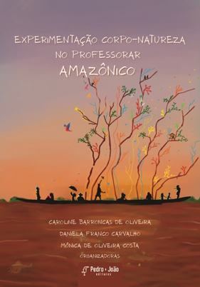
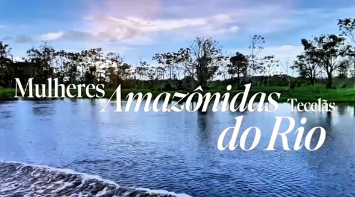

Defesa de Dissertação
Hannyn Barbara Alves Garcia
Corpo em contaminações: entre imagens, sensações e uma esquizo-ciência
Três encontros em evidência, organizados em uma linha mais compacta para leitura rápida.
Corpo em contaminações: entre imagens, sensações e uma esquizo-ciência

Escritas em ensaio-ramificações: composições de uma docência mulher em amazônias

@ceiva_curriculosvivos
A produção do VIDAR reúne artigos, ensaios e capítulos sobre educação em ciências, Amazônia, docência e narrativas autobiográficas.
Fabiane Andrade Batista, Hivina Dorzane Machado e Mônica de Oliveira Costa.
Modos de transver a Amazônia e a mulher amazônida a partir de escritas inventivas e processos formativos no PPGEEC.
Abrir PDF do ArtigoCaroline Barroncas de Oliveira, Mônica de Oliveira Costa e colaboradoras.
Reflexões sobre filosofia da diferença, pesquisa e existência de mulheres pesquisadoras em contextos amazônicos.
Abrir PDF do ArtigoCapas apresentadas no guia: duas obras literárias e a obra audiovisual do VIDAR.

Obra literária

Obra literária

Obra audiovisual


"Quem anda no trilho é trem de ferro. Sou água que corre entre pedras - liberdade caça jeito."
- Manuel de Barros